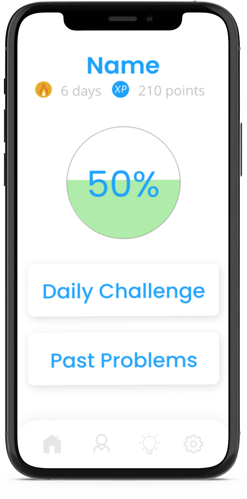
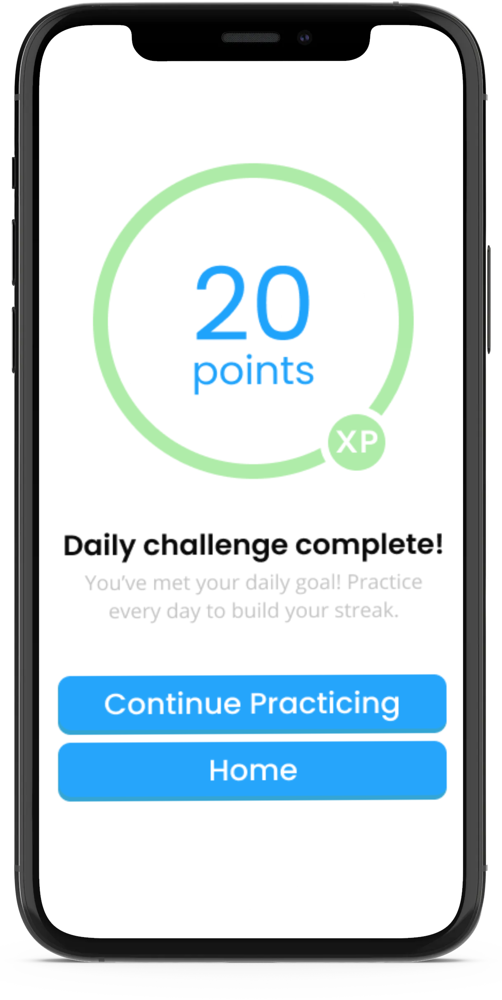
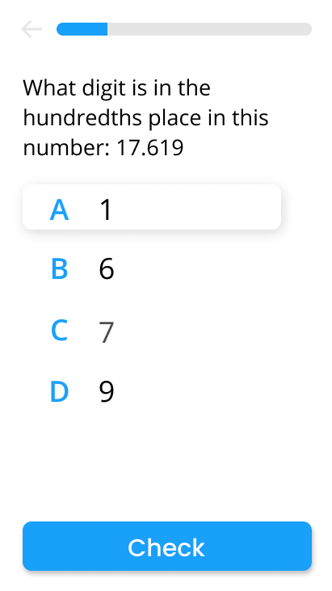
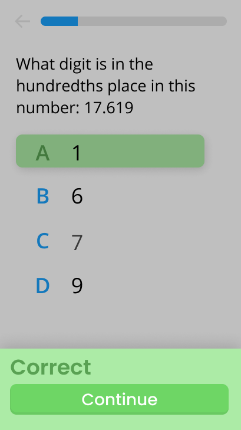
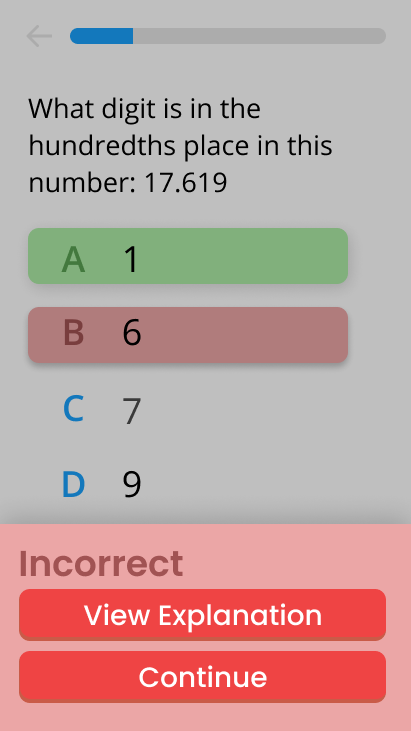

SOLve
-
Standardized test preparation for all.
-

-
SOLve is a mobile application created to help students prepare for the Virginia SOL standardized tests and is the 3rd place winner of the Congressional App Challenge in district VA-08. It is a product of BranchOut! Innovator, a program I led that aims to provide a professional environment for high school students to design apps and projects to help give access to more opportunities and resources for underserved students, mentors, and adults. I was in charge of leading the three subteams, which are development, curriculum design, and marketing. Additionally, I actively worked on the UI/UX design and implemented code.
My contributions:
- UI/UX Design
- Question Interface
-
01. Design
-

Using Figma, I designed the user-interface that was later implemented into the application.
I opted for a minimalist design with a green and blue theme. I chose these colors because blue is often used in educational settings, while the green's connotation with energy and growth serves to encourage users to continue using the app.
For titles and buttons, I used the Poppins semi-bold font to stand out, and for everything else, I used the Open Sans font. -
02. Question Interface
Using Android Studio, I programmed the mechanics and interface of the app questions. This involved connecting the app to a database using Google's Firebase Realtime Databases and creating a class for loading this data. Additionally, I programmed the game mechanics that handle correct and incorrect answers.
-
